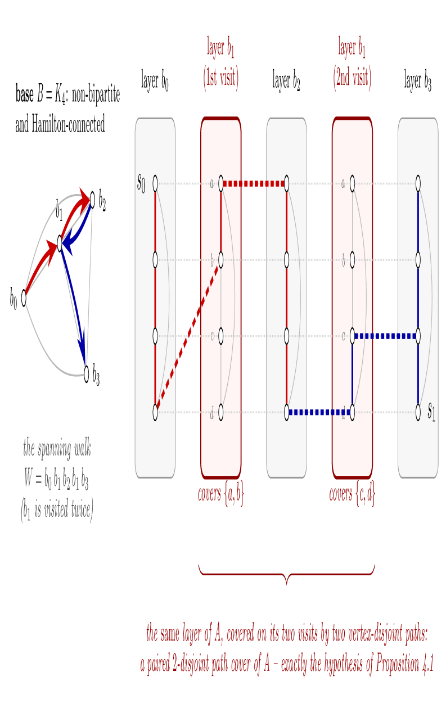
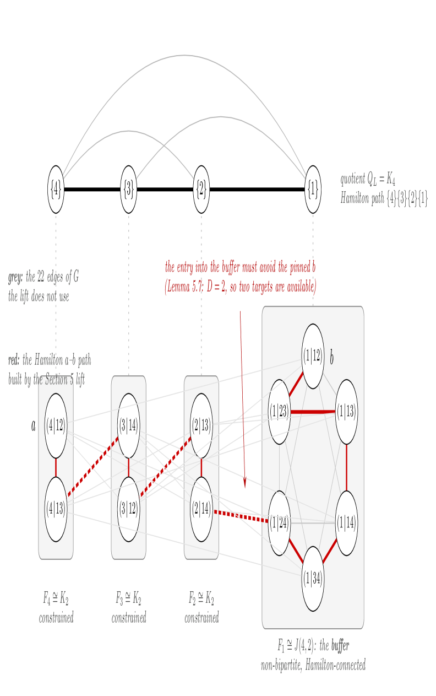

Proves that interchange graphs of (0,1)-matrices are maximally Hamiltonian, with the complete argument machine-checked from first principles in Lean 4.
Abstract
For integer vectors R,S let A(R,S) denote the class of (0,1)-matrices with row sum vector R and column sum vector S. Its interchange graph G(R,S) has A(R,S) as its vertex set, two matrices being adjacent when they differ by a single 2 x 2 interchange. Brualdi conjectured that G(R,S) is Hamiltonian for every R,S. We prove the stronger statement that G(R,S) is maximally Hamiltonian: Hamilton-laceable when bipartite, and Hamilton-connected when not. The proof is a structural induction on the number of matrices in the class, organized by the structure theory of interchange graphs. Deleting inactive lines and splitting invariant positions expresses any class as a Cartesian product, reducing the argument to the prime factors. The bipartite classes are products of complete transposition graphs; we settle them together, without induction, by proving they are paired 2-disjoint-path-coverable and hence Hamilton-laceable, using a recent theorem of Coleman, Fischberg, Gong, Harrington and Wong on paired disjoint path covers. The non-bipartite classes divide into three cases: products assembled from smaller factors, a base of Johnson graphs and small classes, and the large prime classes, treated by a pivot-and-fiber construction whose line quotients are matroid base-exchange graphs. The complete argument has been machine-checked in the Lean 4 proof assistant from first principles together with seven cited results of the literature; the disjoint-path-cover results it imports are themselves proved within the formalization.
Problem
Brualdi conjectured that the interchange graph G(R,S) of (0,1)-matrices with prescribed row sum vector R and column sum vector S is Hamiltonian for every R,S.
Approach
A structural induction on the number of matrices in the class is organized by the structure theory of interchange graphs. Deleting inactive lines and splitting invariant positions expresses classes as Cartesian products, reducing to prime factors. Bipartite classes are handled via paired disjoint path covers, and non-bipartite prime classes via a pivot-and-fiber construction with matroid base-exchange quotients. The complete proof was formalized in the Lean 4 proof assistant from first principles, including the imported disjoint-path-cover results.

Figure 1: The doubled-layer device. G=A\,\square\,B is drawn as copies of A (“layers”) indexed by V(B) , with layers over adjacent B -vertices joined by the identity matching on the A -coordinate. A spanning walk W of B visits one vertex twice; here the layers are drawn in walk order, so the doubled layer appears twice. Since A is bipartite, traversing a layer by a Hamilton path of A flips the A -

Figure 2: The construction of this section, on the class R=(2,2,1) , S=(2,1,1,1) . All twelve matrices of \mathcal{A}(R,S) and all thirty-three edges of G(R,S) are drawn. Fixing the buffer line L= row 3 partitions the class into four fibers, which sit below their vertices in the quotient Q_{L}=K_{4} (dotted). Three fibers are constrained ( K_{2} : bipartite, so a traversal’s exit is forced); the f
Results
G(R,S) is proved to be maximally Hamiltonian: Hamilton-laceable when bipartite and Hamilton-connected otherwise, a strengthening of Brualdi's conjecture, with all details machine-checked in Lean 4.